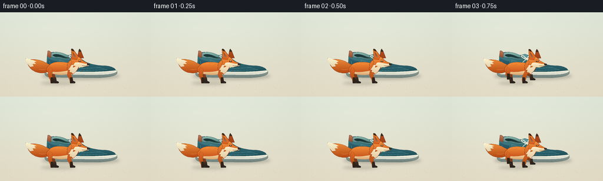
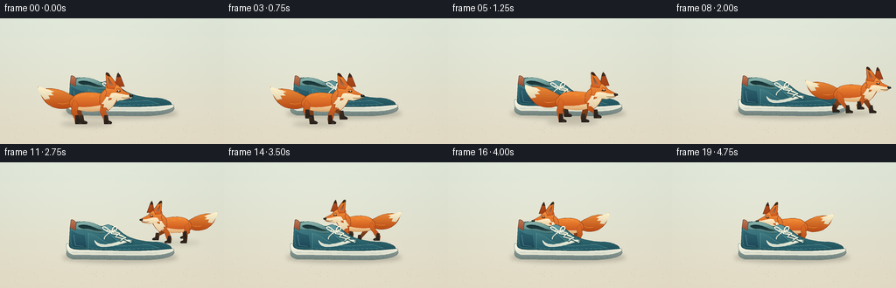

CODING AGENTS AS PIXEL WORLD MODELS
traex/GPT-6.1-Sol · dynamic_spatial_relationship_0028
点击播放 · 原生 RGB 像素
逐轮保存的候选
回放视频、检查图与代码变化。
每份候选均可单独播放。实际图片检查记录在下方工具轨迹中。
候选 01播放与检查图
点击播放 · 原生 RGB 像素


展开代码变化
--- 上一保存版本
+++ 本次保存版本
@@ -0,0 +1,188 @@
+from pathlib import Path
+import math
+import numpy as np
+from PIL import Image, ImageDraw, ImageFilter
+import artifact_io
+
+W,H,S=256,144,4
+CASE=Path(__file__).resolve().parent
+
+def curve_path(items):
+ points=[]; cur=None; start=None
+ for item in items:
+ if item[0]=='M':
+ cur=item[1:]; start=cur; points.append(cur)
+ elif item[0]=='L':
+ cur=item[1:]; points.append(cur)
+ elif item[0]=='C':
+ p0=cur; p1=item[1:3]; p2=item[3:5]; p3=item[5:7]
+ for t in np.linspace(0,1,18)[1:]:
+ points.append(tuple((1-t)**3*p0[k]+3*(1-t)**2*t*p1[k]+3*(1-t)*t*t*p2[k]+t**3*p3[k] for k in range(2)))
+ cur=p3
+ elif item[0]=='Q':
+ p0=cur; p1=item[1:3]; p2=item[3:5]
+ for t in np.linspace(0,1,14)[1:]:
+ points.append(tuple((1-t)**2*p0[k]+2*(1-t)*t*p1[k]+t*t*p2[k] for k in range(2)))
+ cur=p2
+ elif item[0]=='Z': points.append(start)
+ return points
+
+class Painter:
+ def __init__(self, im, transform=None):
+ self.im=im; self.d=ImageDraw.Draw(im); self.transform=transform or (lambda p:p)
+ def pts(self,pts): return [(int(self.transform(p)[0]*S),int(self.transform(p)[1]*S)) for p in pts]
+ def shape(self,path,top,bottom=None,edge=None,width=.5):
+ pts=self.pts(curve_path(path)); mask=Image.new('L',self.im.size);md=ImageDraw.Draw(mask);md.polygon(pts,fill=255)
+ if bottom is None: self.im.paste(top,(0,0),mask)
+ else:
+ ymin=min(p[1] for p in pts); ymax=max(p[1] for p in pts)
+ y=np.clip((np.arange(self.im.height)-ymin)/max(1,ymax-ymin),0,1)
+ a=np.array(top);b=np.array(bottom)
+ col=np.uint8(a[None,:]*(1-y[:,None])+b[None,:]*y[:,None])
+ grad=np.broadcast_to(col[:,None,:],(self.im.height,self.im.width,3)).copy()
+ self.im.paste(Image.fromarray(grad),(0,0),mask)
+ if edge: self.d.line(pts+[pts[0]],fill=edge,width=max(1,int(width*S)),joint='curve')
+ def line(self,pts,fill,width=1): self.d.line(self.pts(pts),fill=fill,width=max(1,int(width*S)),joint='curve')
+ def bez(self,path,fill,width=1): self.line(curve_path(path),fill,width)
+ def ellipse(self,box,fill,outline=None,width=1):
+ a=self.transform((box[0],box[1]));b=self.transform((box[2],box[3]));
+ self.d.ellipse((int(min(a[0],b[0])*S),int(min(a[1],b[1])*S),int(max(a[0],b[0])*S),int(max(a[1],b[1])*S)),fill=fill,outline=outline,width=max(1,int(width*S)))
+
+def shadow(im,x,y,rx,ry,opacity=50):
+ layer=Image.new('RGBA',im.size);d=ImageDraw.Draw(layer)
+ d.ellipse(((x-rx)*S,(y-ry)*S,(x+rx)*S,(y+ry)*S),fill=(48,43,28,opacity))
+ layer=layer.filter(ImageFilter.GaussianBlur(2.4*S));im.paste(layer,(0,0),layer)
+
+def background():
+ yy,xx=np.mgrid[0:H*S,0:W*S]; y=yy/S;x=xx/S
+ # Quiet, warm photographic-style seamless backdrop, with a subtly textured floor.
+ ctop=np.array([222,230,216]);cbot=np.array([226,218,196])
+ t=np.clip(y/H,0,1)[...,None]
+ col=ctop*(1-t)+cbot*t
+ light=4*np.exp(-((x-95)**2/(110**2)+(y-42)**2/90**2))-3*((x-128)/160)**2
+ rng=np.random.default_rng(81); grain=rng.normal(0,.40,(H*S,W*S))
+ col=np.clip(col+light[...,None]+grain[...,None],0,255).astype('uint8')
+ im=Image.fromarray(col)
+ # Very faint horizontal floor plane and sparse tiny grains, no distracting props.
+ d=ImageDraw.Draw(im)
+ for _ in range(130):
+ px=rng.uniform(6,250);py=rng.uniform(107,142);r=rng.uniform(.12,.35)
+ d.ellipse(((px-r)*S,(py-r*.4)*S,(px+r)*S,(py+r*.4)*S),fill=(201,198,174))
+ return im
+
+def shoe(im):
+ p=Painter(im)
+ # Rubber outsole with a shaped heel and rounded toe.
+ p.shape([('M',77,96),('C',97,94,139,98,171,96),('C',186,96,198,98,199,103),('C',198,111,174,112,161,112),('L',83,111),('Q',76,109,76,104),('Z',)],(151,164,158),(112,130,126),edge=(101,119,114),width=.65)
+ p.shape([('M',76,93),('C',108,94,151,96,176,94),('C',188,94,198,97,199,101),('C',193,106,179,107,164,107),('L',83,106),('Q',75,104,76,93),('Z',)],(254,250,230),(219,221,205),edge=(123,146,141),width=.55)
+ # Upper. Raised heel, diagonal instep, bulbous toe, stitched suede side panels.
+ p.shape([('M',79,95),('L',80,77),('Q',80,69,89,68),('C',97,67,104,74,117,73),('Q',128,70,135,77),('C',145,87,158,90,176,91),('C',187,91,196,95,196,99),('C',167,103,126,101,90,100),('Q',80,100,79,95),('Z',)],(77,139,146),(29,79,89),edge=(27,68,73),width=.65)
+ # Heel cap and subtle highlights.
+ p.shape([('M',81,77),('C',86,81,93,83,97,83),('L',99,98),('L',83,97),('Q',80,89,81,77),('Z',)],(47,102,115),(29,71,86),edge=(80,134,140),width=.4)
+ p.bez([('M',84,83),('L',86,95),('L',95,96)],(107,159,159),.6)
+ # An oval padded collar, with a genuinely dark interior.
+ p.shape([('M',84,74),('C',85,67,98,66,110,71),('C',115,74,121,74,126,76),('C',124,83,113,83,103,79),('C',94,77,89,80,84,74),('Z',)],(143,184,174),(65,116,120),edge=(33,81,86),width=.65)
+ p.shape([('M',89,73),('C',94,70,103,72,111,76),('L',119,78),('C',111,80,105,77,99,76),('Q',93,77,89,73),('Z',)],(21,48,52),(38,70,68))
+ # Tongue, visible top surface and lace saddle.
+ p.shape([('M',116,75),('Q',122,69,128,73),('L',153,91),('L',136,93),('L',122,81),('Z',)],(100,155,159),(53,111,120),edge=(24,73,83),width=.55)
+ p.shape([('M',101,81),('C',113,84,117,93,133,95),('C',143,97,158,94,170,94),('L',182,98),('C',151,101,128,100,101,98),('Z',)],(64,121,130),(35,89,101),edge=(91,148,151),width=.5)
+ # Curved ivory side emblem (not branding) and decorative rust heel tab.
+ p.shape([('M',108,89),('Q',112,94,120,94),('C',131,93,141,88,151,89),('C',141,93,131,97,118,97),('Q',109,97,108,89),('Z',)],(241,237,214),(205,216,201))
+ p.shape([('M',80,75),('L',81,67),('Q',81,65,84,66),('L',87,69),('L',86,78),('Z',)],(196,121,87),(143,75,50),edge=(104,68,50),width=.5)
+ # Tiny leather stitch marks on the upper.
+ for k in range(15):
+ x=99+k*5.3;y=99.0+.4*math.sin(k*.3)
+ p.line([(x,y),(x+2,y+.04)],(119,157,151),.33)
+ # Eyelets and four individual crossed cotton laces.
+ pairs=[((122,78),(131,78)),((127,82),(137,82)),((132,86),(144,87)),((138,90),(150,92))]
+ for a,b in pairs:
+ for x,y in (a,b):
+ p.ellipse((x-1,y-1,x+1,y+1),(23,67,74));p.ellipse((x-.4,y-.4,x+.4,y+.4),(174,191,177))
+ for j in range(3):
+ a,b=pairs[j];c,d=pairs[j+1]
+ for q,r in ((a,d),(b,c)):
+ p.bez([('M',q[0],q[1]),('Q',(q[0]+r[0])/2,(q[1]+r[1])/2-1,r[0],r[1])],(30,77,82),2.2)
+ p.bez([('M',q[0],q[1]-.4),('Q',(q[0]+r[0])/2,(q[1]+r[1])/2-1.6,r[0],r[1]-.4)],(246,242,219),1.35)
+ p.bez([('M',126,79),('C',120,71,114,74,119,77),('Q',123,80,128,80),('C',128,71,136,73,133,77),('Q',132,79,127,80)],(248,242,222),1.25)
+ p.bez([('M',127,80),('Q',119,84,119,88)],(241,236,214),1.1)
+ p.bez([('M',128,80),('Q',139,83,141,85)],(241,236,214),1.1)
+ # Sole groove and small tread interruptions.
+ p.bez([('M',82,103),('Q',128,104,165,104),('Q',186,104,194,101)],(180,193,179),.6)
+ for x in range(84,189,7): p.line([(x,108.5),(x+.6,110.5)],(95,115,110),.6)
+
+
+def fox(im,x,y,scale,direction,phase,moving,frame):
+ bounce=1.45*math.sin(phase*2) if moving else .22*math.sin(frame*.7)
+ # Torso moves with the gallop, while paws remain close to the floor.
+ tr=lambda v:(x+direction*scale*v[0],y+scale*(v[1]+bounce))
+ p=Painter(im,tr)
+ orange=(224,102,32);edge=(139,61,24)
+ def leg(hip,ph,far):
+ if moving:
+ stride=math.sin(ph);lift=max(0,math.cos(ph))*6.5
+ foot=hip+stride*11
+ knee=hip+stride*5-2
+ else: foot=hip+2;knee=hip-2;lift=0
+ dark=(62,47,35) if far else (52,39,30)
+ # Hocked animal limbs, each with a separate dark stocking and compact paw.
+ p.shape([('M',hip-3,-28),('Q',hip+5,-24,knee+3,-14),('L',foot+2,-4-lift),('L',foot+5,-2-lift),('Q',foot+6,0-lift,foot+1,0-lift),('L',foot-3,0-lift),('L',foot-4,-6-lift),('L',knee-4,-14),('Q',hip-5,-21,hip-3,-28),('Z',)],(156,74,28) if far else (226,110,38),(99,53,26) if far else (164,69,25),edge=edge,width=.45)
+ p.shape([('M',foot-3,-10-lift),('L',foot+1,-10-lift),('L',foot+2,-4-lift),('Q',foot+8,-2-lift,foot+5,0-lift),('L',foot-3,0-lift),('Z',)],dark,(39,33,28),width=.3)
+ if not far: p.line([(foot+1,-1-lift),(foot+4,-1-lift)],(105,81,54),.55)
+ leg(-12,phase+math.pi,True);leg(16,phase+.65,True)
+ # Plush tapered tail, flowing back with a white tip.
+ wag=1.6*math.sin(phase*.7) if moving else .8*math.sin(frame*.5)
+ p.shape([('M',-17,-30),('C',-30,-37,-38,-42-wag,-54,-40-wag),('Q',-61,-39-wag,-60,-43-wag),('C',-59,-30-wag,-49,-19,-38,-18),('C',-26,-16,-21,-20,-17,-25),('Z',)],(239,144,58),(181,73,21),edge=edge,width=.6)
+ p.shape([('M',-47,-39-wag),('Q',-55,-41-wag,-60,-43-wag),('Q',-61,-39,-57,-33),('L',-53,-28),('L',-47,-29),('L',-49,-33),('L',-43,-33),('L',-46,-36),('L',-42,-37),('Z',)],(255,244,207),(225,211,175),edge=None)
+ p.bez([('M',-38,-24),('Q',-31,-22,-24,-25)],(245,149,59),.7)
+ # Sleek canine torso, light belly and rump.
+ p.shape([('M',-21,-30),('C',-15,-39,5,-37,20,-33),('C',26,-30,24,-21,17,-17),('C',6,-13,-10,-14,-22,-18),('Q',-28,-24,-21,-30),('Z',)],(244,141,53),(192,74,25),edge=edge,width=.65)
+ p.shape([('M',-18,-20),('C',-6,-18,3,-20,14,-22),('L',18,-18),('C',8,-12,-12,-14,-20,-18),('Z',)],(246,213,162),(220,166,109))
+ leg(-17,phase,False);leg(16,phase+math.pi+.65,False)
+ # Shoulder and erect white throat with pointed furry contours.
+ p.shape([('M',10,-31),('C',12,-38,18,-41,22,-43),('L',33,-35),('C',30,-25,24,-18,19,-15),('L',17,-19),('L',13,-18),('L',14,-22),('L',10,-23),('Q',10,-28,10,-31),('Z',)],(241,139,57),(195,84,29),edge=edge,width=.55)
+ p.shape([('M',21,-38),('L',31,-33),('C',29,-26,25,-19,20,-16),('L',17,-19),('L',14,-19),('L',15,-23),('L',12,-23),('Q',18,-30,21,-38),('Z',)],(255,242,209),(228,204,163))
+ # Far ear, triangle with a black tip, then the fox's long pointed head.
+ p.shape([('M',27,-42),('L',30,-57),('Q',31,-59,33,-56),('L',38,-43),('Z',)],(174,77,29),(160,65,24),edge=(103,47,25),width=.55)
+ p.shape([('M',29,-54),('L',31,-59),('L',34,-54),('Z',)],(61,43,32))
+ p.shape([('M',18,-45),('C',25,-49,32,-45,36,-39),('L',47,-33),('Q',48,-31,43,-29),('L',34,-27),('L',26,-29),('L',20,-27),('L',21,-31),('L',16,-32),('L',18,-36),('Q',15,-42,18,-45),('Z',)],(247,153,67),(210,92,29),edge=edge,width=.65)
+ # Cream cheek and muzzle: long narrow nose instead of a cat-like round face.
+ p.shape([('M',23,-35),('C',29,-37,36,-33,45,-33),('L',47,-31),('L',35,-27),('L',28,-28),('L',23,-27),('L',24,-30),('L',20,-30),('Z',)],(255,238,200),(232,209,165))
+ # Foreground ear with warm inner skin, fur edge, and a distinct dark point.
+ p.shape([('M',18,-41),('L',17,-57),('Q',17,-60,20,-58),('L',29,-46),('L',26,-40),('Z',)],(238,133,46),(215,92,28),edge=(120,53,27),width=.65)
+ p.shape([('M',19,-54),('L',21,-44),('L',26,-44),('Z',)],(111,65,42),(180,113,75))
+ p.shape([('M',17,-57),('Q',17,-60,20,-58),('L',22,-54),('L',19,-55),('Z',)],(58,40,28))
+ # Brow and glossy almond eye, alert but friendly.
+ p.bez([('M',29,-40),('Q',32,-41,34,-39)],(161,65,25),.6)
+ p.shape([('M',29,-37.4),('Q',32,-39.5,34,-37.5),('Q',32,-35.8,29,-37.4),('Z',)],(41,30,22))
+ p.ellipse((31.2,-38.5,32.25,-37.45),(255,247,220))
+ p.shape([('M',44,-34),('Q',49,-34,48,-31.5),('L',45,-30.7),('L',43.6,-32),('Z',)],(54,41,32),(28,28,26))
+ p.ellipse((45.5,-33.7,46.6,-33),(137,130,111))
+ p.bez([('M',45,-30.5),('Q',39,-29,35,-30)],(95,66,42),.55)
+ # Fine fur, deliberately sparse at this image size.
+ for a,b in [((-17,-31),(-13,-33)),((-11,-33),(-6,-34)),((-2,-32),(3,-32)),((8,-30),(11,-28)),((19,-35),(20,-32)),((25,-44),(28,-43))]:
+ p.line([a,b],(255,170,81),.45)
+ for a,b in [((22,-31),(25,-32)),((20,-24),(22,-27)),((-52,-35),(-56,-37))]:p.line([a,b],(255,251,223),.45)
+
+
+def main():
+ bg=background();frames=[]
+ poses=[(104,121,1.0,1),(104,121,1.0,1),(105,121,1.0,1),
+ (113,121,.99,1),(128,120,.99,1),(147,119,.98,1),(169,117,.96,1),
+ (190,114,.94,1),(207,109,.90,1),(213,101,.85,.80),
+ (211,95,.82,-.65),(199,92,.82,-1),(184,91,.82,-1),(169,91,.82,-1),
+ (153,92,.82,-1),(141,93,.82,-1),(135,94,.82,-1),(135,94,.82,-1),
+ (135,94,.82,-1),(135,94,.82,-1)]
+ for f,(x,y,sc,di) in enumerate(poses):
+ im=bg.copy();shadow(im,137,109,66,6.2,56)
+ moving=3<=f<=15
+ phase=(f-3)*1.6
+ shadow(im,x-5*di,y+.1,30*sc,3*sc,44 if y>105 else 28)
+ if y<107:
+ fox(im,x,y,sc,di,phase,moving,f);shoe(im)
+ else:
+ shoe(im);fox(im,x,y,sc,di,phase,moving,f)
+ im=im.resize((W,H),Image.Resampling.LANCZOS).convert('RGB')
+ frames.append(np.asarray(im))
+ artifact_io.save(np.stack(frames),CASE)
+
+if __name__=='__main__':main()
可观测工具轨迹
实际执行的命令与返回图片。
命令 1exit 0
/bin/bash -lc 'ls -la && cat prompt.txt && cat GENERATION_RULES.md && cat task_spec.json'
命令 2exit 0
/bin/bash -lc "cat artifact_io.py && python - <<'PY' import PIL,numpy print(PIL.__version__) PY"
命令 3exit 0
/bin/bash -lc "cat > generate.py <<'PY'
from pathlib import Path
import math
import numpy as np
from PIL import Image, ImageDraw, ImageFilter
import artifact_io
W,H,S=256,144,4
CASE=Path(__file__).resolve().parent
def curve_path(items):
points=[]; cur=None; start=None
for item in items:
if item[0]=='M':
cur=item[1:]; start=cur; points.append(cur)
elif item[0]=='L':
cur=item[1:]; points.append(cur)
elif item[0]=='C':
p0=cur; p1=item[1:3]; p2=item[3:5]; p3=item[5:7]
for t in np.linspace(0,1,18)[1:]:
points.append(tuple((1-t)**3*p0[k]+3*(1-t)**2*t*p1[k]+3*(1-t)*t*t*p2[k]+t**3*p3[k] for k in range(2)))
cur=p3
elif item[0]=='Q':
p0=cur; p1=item[1:3]; p2=item[3:5]
for t in np.linspace(0,1,14)[1:]:
points.append(tuple((1-t)**2*p0[k]+2*(1-t)*t*p1[k]+t*t*p2[k] for k in range(2)))
cur=p2
elif item[0]=='Z': points.append(start)
return points
class Painter:
def __init__(self, im, transform=None):
self.im=im; self.d=ImageDraw.Draw(im); self.transform=transform or (lambda p:p)
def pts(self,pts): return [(int(self.transform(p)[0]*S),int(self.transform(p)[1]*S)) for p in pts]
def shape(self,path,top,bottom=None,edge=None,width=.5):
pts=self.pts(curve_path(path)); mask=Image.new('L',self.im.size);md=ImageDraw.Draw(mask);md.polygon(pts,fill=255)
if bottom is None: self.im.paste(top,(0,0),mask)
else:
ymin=min(p[1] for p in pts); ymax=max(p[1] for p in pts)
y=np.clip((np.arange(self.im.height)-ymin)/max(1,ymax-ymin),0,1)
a=np.array(top);b=np.array(bottom)
col=np.uint8(a[None,:]*(1-y[:,None])+b[None,:]*y[:,None])
grad=np.broadcast_to(col[:,None,:],(self.im.height,self.im.width,3)).copy()
self.im.paste(Image.fromarray(grad),(0,0),mask)
if edge: self.d.line(pts+[pts[0]],fill=edge,width=max(1,int(width*S)),joint='curve')
def line(self,pts,fill,width=1): self.d.line(self.pts(pts),fill=fill,width=max(1,int(width*S)),joint='curve')
def bez(self,path,fill,width=1): self.line(curve_path(path),fill,width)
def ellipse(self,box,fill,outline=None,width=1):
a=self.transform((box[0],box[1]));b=self.transform((box[2],box[3]));
self.d.ellipse((int(min(a[0],b[0])*S),int(min(a[1],b[1])*S),int(max(a[0],b[0])*S),int(max(a[1],b[1])*S)),fill=fill,outline=outline,width=max(1,int(width*S)))
def shadow(im,x,y,rx,ry,opacity=50):
layer=Image.new('RGBA',im.size);d=ImageDraw.Draw(layer)
d.ellipse(((x-rx)*S,(y-ry)*S,(x+rx)*S,(y+ry)*S),fill=(48,43,28,opacity))
layer=layer.filter(ImageFilter.GaussianBlur(2.4*S));im.paste(layer,(0,0),layer)
def background():
yy,xx=np.mgrid[0:H*S,0:W*S]; y=yy/S;x=xx/S
# Quiet, warm photographic-style seamless backdrop, with a subtly textured floor.
ctop=np.array([222,230,216]);cbot=np.array([226,218,196])
t=np.clip(y/H,0,1)[...,None]
col=ctop*(1-t)+cbot*t
light=4*np.exp(-((x-95)**2/(110**2)+(y-42)**2/90**2))-3*((x-128)/160)**2
rng=np.random.default_rng(81); grain=rng.normal(0,.40,(H*S,W*S))
col=np.clip(col+light[...,None]+grain[...,None],0,255).astype('uint8')
im=Image.fromarray(col)
# Very faint horizontal floor plane and sparse tiny grains, no distracting props.
d=ImageDraw.Draw(im)
for _ in range(130):
px=rng.uniform(6,250);py=rng.uniform(107,142);r=rng.uniform(.12,.35)
d.ellipse(((px-r)*S,(py-r*.4)*S,(px+r)*S,(py+r*.4)*S),fill=(201,198,174))
return im
def shoe(im):
p=Painter(im)
# Rubber outsole with a shaped heel and rounded toe.
p.shape([('M',77,96),('C',97,94,139,98,171,96),('C',186,96,198,98,199,103),('C',198,111,174,112,161,112),('L',83,111),('Q',76,109,76,104),('Z',)],(151,164,158),(112,130,126),edge=(101,119,114),width=.65)
p.shape([('M',76,93),('C',108,94,151,96,176,94),('C',188,94,198,97,199,101),('C',193,106,179,107,164,107),('L',83,106),('Q',75,104,76,93),('Z',)],(254,250,230),(219,221,205),edge=(123,146,141),width=.55)
# Upper. Raised heel, diagonal instep, bulbous toe, stitched suede side panels.
p.shape([('M',79,95),('L',80,77),('Q',80,69,89,68),('C',97,67,104,74,117,73),('Q',128,70,135,77),('C',145,87,158,90,176,91),('C',187,91,196,95,196,99),('C',167,103,126,101,90,100),('Q',80,100,79,95),('Z',)],(77,139,146),(29,79,89),edge=(27,68,73),width=.65)
# Heel cap and subtle highlights.
p.shape([('M',81,77),('C',86,81,93,83,97,83),('L',99,98),('L',83,97),('Q',80,89,81,77),('Z',)],(47,102,115),(29,71,86),edge=(80,134,140),width=.4)
p.bez([('M',84,83),('L',86,95),('L',95,96)],(107,159,159),.6)
# An oval padded collar, with a genuinely dark interior.
p.shape([('M',84,74),('C',85,67,98,66,110,71),('C',115,74,121,74,126,76),('C',124,83,113,83,103,79),('C',94,77,89,80,84,74),('Z',)],(143,184,174),(65,116,120),edge=(33,81,86),width=.65)
p.shape([('M',89,73),('C',94,70,103,72,111,76),('L',119,78),('C',111,80,105,77,99,76),('Q',93,77,89,73),('Z',)],(21,48,52),(38,70,68))
# Tongue, visible top surface and lace saddle.
p.shape([('M',116,75),('Q',122,69,128,73),('L',153,91),('L',136,93),('L',122,81),('Z',)],(100,155,159),(53,111,120),edge=(24,73,83),width=.55)
p.shape([('M',101,81),('C',113,84,117,93,133,95),('C',143,97,158,94,170,94),('L',182,98),('C',151,101,128,100,101,98),('Z',)],(64,121,130),(35,89,101),edge=(91,148,151),width=.5)
# Curved ivory side emblem (not branding) and decorative rust heel tab.
p.shape([('M',108,89),('Q',112,94,120,94),('C',131,93,141,88,151,89),('C',141,93,131,97,118,97),('Q',109,97,108,89),('Z',)],(241,237,214),(205,216,201))
p.shape([('M',80,75),('L',81,67),('Q',81,65,84,66),('L',87,69),('L',86,78),('Z',)],(196,121,87),(143,75,50),edge=(104,68,50),width=.5)
# Tiny leather stitch marks on the upper.
for k in range(15):
x=99+k*5.3;y=99.0+.4*math.sin(k*.3)
p.line([(x,y),(x+2,y+.04)],(119,157,151),.33)
# Eyelets and four individual crossed cotton laces.
pairs=[((122,78),(131,78)),((127,82),(137,82)),((132,86),(144,87)),((138,90),(150,92))]
for a,b in pairs:
for x,y in (a,b):
p.ellipse((x-1,y-1,x+1,y+1),(23,67,74));p.ellipse((x-.4,y-.4,x+.4,y+.4),(174,191,177))
for j in range(3):
a,b=pairs[j];c,d=pairs[j+1]
for q,r in ((a,d),(b,c)):
p.bez([('M',q[0],q[1]),('Q',(q[0]+r[0])/2,(q[1]+r[1])/2-1,r[0],r[1])],(30,77,82),2.2)
p.bez([('M',q[0],q[1]-.4),('Q',(q[0]+r[0])/2,(q[1]+r[1])/2-1.6,r[0],r[1]-.4)],(246,242,219),1.35)
p.bez([('M',126,79),('C',120,71,114,74,119,77),('Q',123,80,128,80),('C',128,71,136,73,133,77),('Q',132,79,127,80)],(248,242,222),1.25)
p.bez([('M',127,80),('Q',119,84,119,88)],(241,236,214),1.1)
p.bez([('M',128,80),('Q',139,83,141,85)],(241,236,214),1.1)
# Sole groove and small tread interruptions.
p.bez([('M',82,103),('Q',128,104,165,104),('Q',186,104,194,101)],(180,193,179),.6)
for x in range(84,189,7): p.line([(x,108.5),(x+.6,110.5)],(95,115,110),.6)
def fox(im,x,y,scale,direction,phase,moving,frame):
bounce=1.45*math.sin(phase*2) if moving else .22*math.sin(frame*.7)
# Torso moves with the gallop, while paws remain close to the floor.
tr=lambda v:(x+direction*scale*v[0],y+scale*(v[1]+bounce))
p=Painter(im,tr)
orange=(224,102,32);edge=(139,61,24)
def leg(hip,ph,far):
if moving:
stride=math.sin(ph);lift=max(0,math.cos(ph))*6.5
foot=hip+stride*11
knee=hip+stride*5-2
else: foot=hip+2;knee=hip-2;lift=0
dark=(62,47,35) if far else (52,39,30)
# Hocked animal limbs, each with a separate dark stocking and compact paw.
p.shape([('M',hip-3,-28),('Q',hip+5,-24,knee+3,-14),('L',foot+2,-4-lift),('L',foot+5,-2-lift),('Q',foot+6,0-lift,foot+1,0-lift),('L',foot-3,0-lift),('L',foot-4,-6-lift),('L',knee-4,-14),('Q',hip-5,-21,hip-3,-28),('Z',)],(156,74,28) if far else (226,110,38),(99,53,26) if far else (164,69,25),edge=edge,width=.45)
p.shape([('M',foot-3,-10-lift),('L',foot+1,-10-lift),('L',foot+2,-4-lift),('Q',foot+8,-2-lift,foot+5,0-lift),('L',foot-3,0-lift),('Z',)],dark,(39,33,28),width=.3)
if not far: p.line([(foot+1,-1-lift),(foot+4,-1-lift)],(105,81,54),.55)
leg(-12,phase+math.pi,True);leg(16,phase+.65,True)
# Plush tapered tail, flowing back with a white tip.
wag=1.6*math.sin(phase*.7) if moving else .8*math.sin(frame*.5)
p.shape([('M',-17,-30),('C',-30,-37,-38,-42-wag,-54,-40-wag),('Q',-61,-39-wag,-60,-43-wag),('C',-59,-30-wag,-49,-19,-38,-18),('C',-26,-16,-21,-20,-17,-25),('Z',)],(239,144,58),(181,73,21),edge=edge,width=.6)
p.shape([('M',-47,-39-wag),('Q',-55,-41-wag,-60,-43-wag),('Q',-61,-39,-57,-33),('L',-53,-28),('L',-47,-29),('L',-49,-33),('L',-43,-33),('L',-46,-36),('L',-42,-37),('Z',)],(255,244,207),(225,211,175),edge=None)
p.bez([('M',-38,-24),('Q',-31,-22,-24,-25)],(245,149,59),.7)
# Sleek canine torso, light belly and rump.
p.shape([('M',-21,-30),('C',-15,-39,5,-37,20,-33),('C',26,-30,24,-21,17,-17),('C',6,-13,-10,-14,-22,-18),('Q',-28,-24,-21,-30),('Z',)],(244,141,53),(192,74,25),edge=edge,width=.65)
p.shape([('M',-18,-20),('C',-6,-18,3,-20,14,-22),('L',18,-18),('C',8,-12,-12,-14,-20,-18),('Z',)],(246,213,162),(220,166,109))
leg(-17,phase,False);leg(16,phase+math.pi+.65,False)
# Shoulder and erect white throat with pointed furry contours.
p.shape([('M',10,-31),('C',12,-38,18,-41,22,-43),('L',33,-35),('C',30,-25,24,-18,19,-15),('L',17,-19),('L',13,-18),('L',14,-22),('L',10,-23),('Q',10,-28,10,-31),('Z',)],(241,139,57),(195,84,29),edge=edge,width=.55)
p.shape([('M',21,-38),('L',31,-33),('C',29,-26,25,-19,20,-16),('L',17,-19),('L',14,-19),('L',15,-23),('L',12,-23),('Q',18,-30,21,-38),('Z',)],(255,242,209),(228,204,163))
# Far ear, triangle with a black tip, then the fox's long pointed head.
p.shape([('M',27,-42),('L',30,-57),('Q',31,-59,33,-56),('L',38,-43),('Z',)],(174,77,29),(160,65,24),edge=(103,47,25),width=.55)
p.shape([('M',29,-54),('L',31,-59),('L',34,-54),('Z',)],(61,43,32))
p.shape([('M',18,-45),('C',25,-49,32,-45,36,-39),('L',47,-33),('Q',48,-31,43,-29),('L',34,-27),('L',26,-29),('L',20,-27),('L',21,-31),('L',16,-32),('L',18,-36),('Q',15,-42,18,-45),('Z',)],(247,153,67),(210,92,29),edge=edge,width=.65)
# Cream cheek and muzzle: long narrow nose instead of a cat-like round face.
p.shape([('M',23,-35),('C',29,-37,36,-33,45,-33),('L',47,-31),('L',35,-27),('L',28,-28),('L',23,-27),('L',24,-30),('L',20,-30),('Z',)],(255,238,200),(232,209,165))
# Foreground ear with warm inner skin, fur edge, and a distinct dark point.
p.shape([('M',18,-41),('L',17,-57),('Q',17,-60,20,-58),('L',29,-46),('L',26,-40),('Z',)],(238,133,46),(215,92,28),edge=(120,53,27),width=.65)
p.shape([('M',19,-54),('L',21,-44),('L',26,-44),('Z',)],(111,65,42),(180,113,75))
p.shape([('M',17,-57),('Q',17,-60,20,-58),('L',22,-54),('L',19,-55),('Z',)],(58,40,28))
# Brow and glossy almond eye, alert but friendly.
p.bez([('M',29,-40),('Q',32,-41,34,-39)],(161,65,25),.6)
p.shape([('M',29,-37.4),('Q',32,-39.5,34,-37.5),('Q',32,-35.8,29,-37.4),('Z',)],(41,30,22))
p.ellipse((31.2,-38.5,32.25,-37.45),(255,247,220))
p.shape([('M',44,-34),('Q',49,-34,48,-31.5),('L',45,-30.7),('L',43.6,-32),('Z',)],(54,41,32),(28,28,26))
p.ellipse((45.5,-33.7,46.6,-33),(137,130,111))
p.bez([('M',45,-30.5),('Q',39,-29,35,-30)],(95,66,42),.55)
# Fine fur, deliberately sparse at this image size.
for a,b in [((-17,-31),(-13,-33)),((-11,-33),(-6,-34)),((-2,-32),(3,-32)),((8,-30),(11,-28)),((19,-35),(20,-32)),((25,-44),(28,-43))]:
p.line([a,b],(255,170,81),.45)
for a,b in [((22,-31),(25,-32)),((20,-24),(22,-27)),((-52,-35),(-56,-37))]:p.line([a,b],(255,251,223),.45)
def main():
bg=background();frames=[]
poses=[(104,121,1.0,1),(104,121,1.0,1),(105,121,1.0,1),
(113,121,.99,1),(128,120,.99,1),(147,119,.98,1),(169,117,.96,1),
(190,114,.94,1),(207,109,.90,1),(213,101,.85,.80),
(211,95,.82,-.65),(199,92,.82,-1),(184,91,.82,-1),(169,91,.82,-1),
(153,92,.82,-1),(141,93,.82,-1),(135,94,.82,-1),(135,94,.82,-1),
(135,94,.82,-1),(135,94,.82,-1)]
for f,(x,y,sc,di) in enumerate(poses):
im=bg.copy();shadow(im,137,109,66,6.2,56)
moving=3<=f<=15
phase=(f-3)*1.6
shadow(im,x-5*di,y+.1,30*sc,3*sc,44 if y>105 else 28)
if y<107:
fox(im,x,y,sc,di,phase,moving,f);shoe(im)
else:
shoe(im);fox(im,x,y,sc,di,phase,moving,f)
im=im.resize((W,H),Image.Resampling.LANCZOS).convert('RGB')
frames.append(np.asarray(im))
artifact_io.save(np.stack(frames),CASE)
if __name__=='__main__':main()
PY
python generate.py"视觉工具实际返回图片 1

保存候选 1 份；完成命令 3 次；可验证图片返回 1 张。原始 API 响应与完整日志保留在本地。